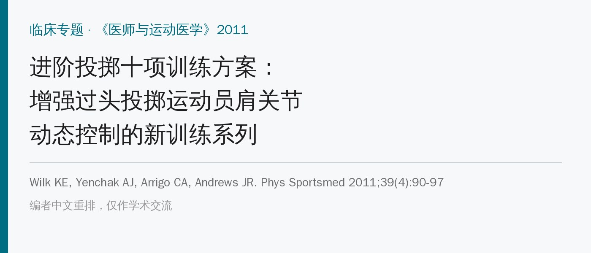
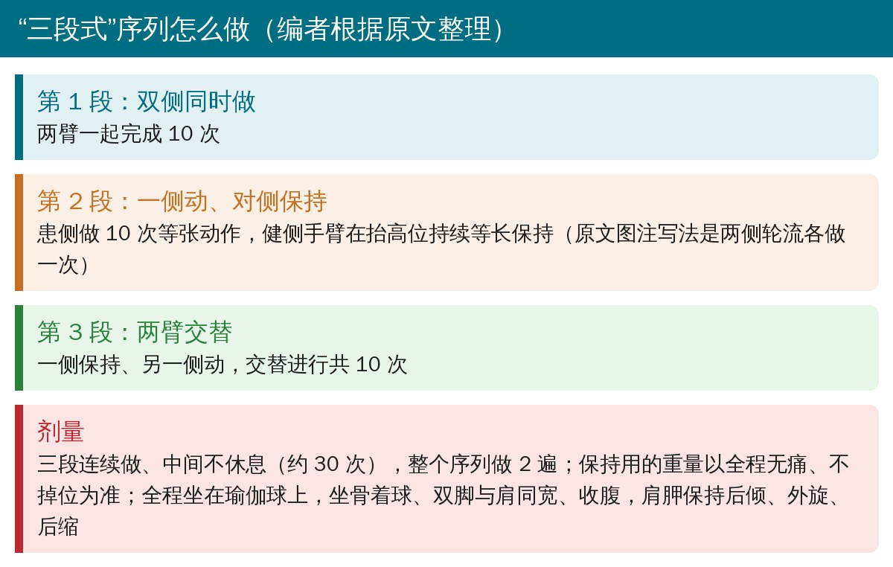
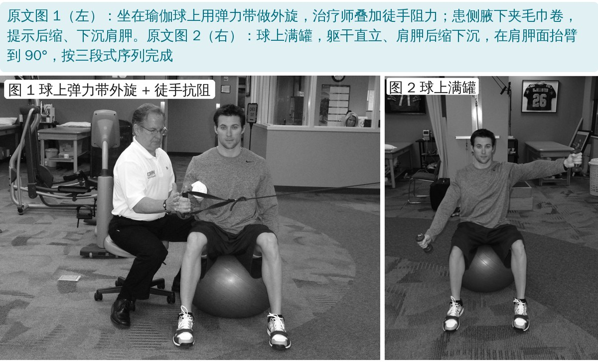
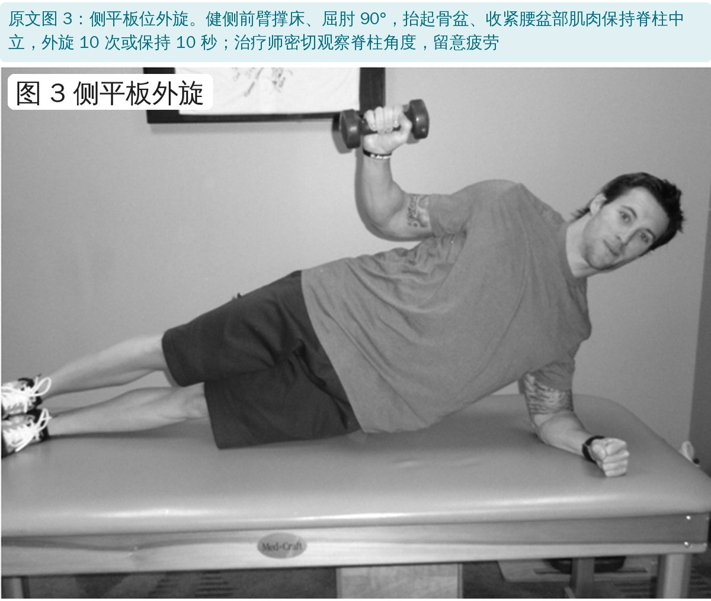
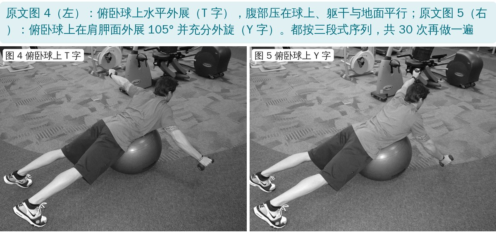
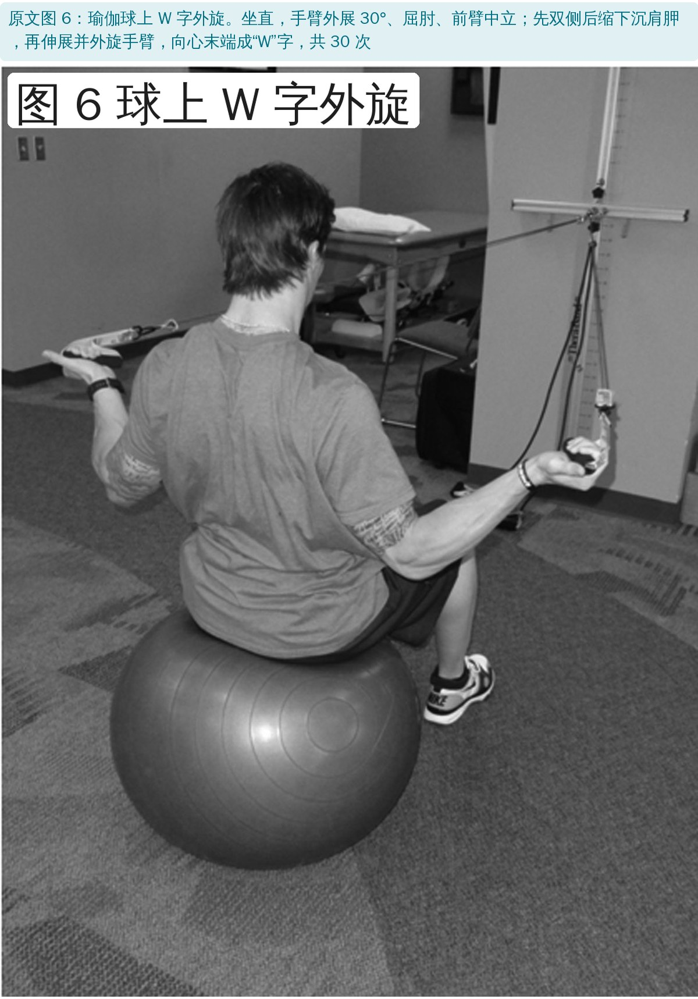

🔖原文信息（编者中文重排）
📚 文献信息
▪ Wilk KE, Yenchak AJ, Arrigo CA, Andrews JR. The Advanced Throwers Ten Exercise Program: a new exercise series for enhanced dynamic shoulder control in the overhead throwing athlete. Phys Sportsmed. 2011;39(4):90-97. doi:10.3810/psm.2011.11.1943
▪ 作者来自 Champion 运动医学中心、美国运动医学研究所等，Wilk 和 Andrews 是“投掷十项”的提出者
▪ 文章类型：临床专题（方案介绍），没有试验数据
• 投手的肩是“既要松又要稳”：作者称为“投掷者悖论”，肩必须足够松才能投，又要足够稳才不出症状
• 加速期从最大外旋到出手只要 0.03 秒，内旋角速度约 7250°/秒；盂肱关节前向剪切力约 0.5 倍体重、牵拉力可达 1.5 倍体重
• 动态稳定靠四个机制：肩袖共同收缩把肱骨头压在关节盂中央、肩袖收缩带动关节囊张力、肩胛位置、神经肌肉控制
• 疲劳是大敌：疲劳时外旋角度、球速、前腿屈膝都下降；带着疲劳投球的少年投手受伤风险高 36 倍；疲劳可使盂肱本体感觉下降多达 78%，肩袖疲劳时上举起始肱骨头上移
• 1991 年的“投掷十项”基于肌电研究，6 周可使球速提高约 2%；但它以传统等张动作为主，对耐力和动态稳定的挑战不够，这就是“进阶版”的出发点
| 阶段 | 目标 | 训练与手段 |
|---|---|---|
| 第 1 阶段：急性期 | 减轻疼痛炎症；恢复活动度；延缓肌萎缩；重建动态稳定（肌力平衡）；控制功能性应力 | 冷疗、离子导入、超声、电刺激；牵伸肩后部以改善内旋和水平内收；肩袖（尤其外旋肌）和肩胛肌（尤其后缩、下沉肌）力量训练；节律稳定；负重训练；本体感觉训练；暂停投掷 |
| 第 2 阶段：中期 | 加强力量；恢复肌力平衡；增强动态稳定；控制柔韧性 | 继续牵伸（尤其肩内旋和水平内收）；进阶到等张训练（完整肩部方案、投掷十项）；节律稳定；开始腰盆核心耐力训练和下肢训练 |
| 第 3 阶段：进阶强化期 | 积极强化；提高神经肌肉控制；提高力量、爆发力和耐力 | 柔韧与牵伸；节律稳定；进阶投掷十项；开始增强式训练、耐力训练和短距离投掷 |
| 第 4 阶段：重返运动期 | 进阶到投掷计划；重返比赛；继续力量和柔韧训练 | 牵伸与柔韧；投掷十项；增强式训练；间歇投掷计划进阶到比赛投掷 |
原文表 1：过头运动员康复的阶段与目标（中文翻译）

🔖三段式序列
• 每个动作都按“双侧同时 → 一侧动、对侧保持 → 两臂交替”三段完成，每段 10 次，连续不休息，整个序列做 2 遍
• 对侧持续等长保持专门挑战肩袖和肩胛肌的耐力，交替动作挑战神经肌肉控制
• 大多数动作坐在瑜伽球上做：不稳定支撑面让躯干、腰盆和下肢一起参与，把上下肢“连成一条链”
• 治疗师可以在任何球上动作上叠加徒手阻力，增加共同收缩和动态稳定的挑战
| 动作 | 是否用持续保持 |
|---|---|
| 球上 0° 外展位弹力带内旋 / 外旋 | 是 |
| 球上满罐 | 是 |
| 球上侧平举到 90° | 是 |
| 侧卧外旋 | 是（原文表注） |
| 俯卧球上 T 字 | 是 |
| 俯卧球上 Y 字 | 是 |
| 俯卧球上划船接外旋 | 是 |
| 下斜方肌 5 式：球上外旋位肩后伸 | — |
| 下斜方肌 5 式：球上外展 45°、外旋位肩后伸 | — |
| 下斜方肌 5 式：站立贴墙画圈滑动 | — |
| 下斜方肌 5 式：站立低位划船 | — |
| 下斜方肌 5 式：站立双手压桌、肩胛下沉 | — |
| 球上肱二头肌弯举 / 肱三头肌伸展 | —（正文说用持续保持） |
| 腕屈伸、前臂旋前旋后 | — |
原文表 2：进阶投掷十项动作（中文翻译）。动作做 3 组 × 10 次，3 组序列做 2 遍

🔖原文图 1、2
• 球上内 / 外旋：0° 外展、腋下夹毛巾卷（可提高肩袖后部肌电），先做单纯动作，再配合对侧在 90° 外展位持续保持
• 满罐：双臂伸直、拇指朝上，在身体前方 30°（肩胛面）抬到肩高，顶点停 2 秒后慢放；之后按三段式做
• 侧平举到 90°：同样三段式

🔖原文图 3：侧平板外旋
• 侧卧外旋：先做标准 3 组，再进阶到侧平板位外旋，前提是支撑侧动态稳定好、能保持脊柱中立

🔖原文图 4、5：俯卧球上 T 字和 Y 字
• 俯卧球上 T、Y 和划船接外旋：腹部压在球上、躯干与地面平行，三段式完成；同时练到肩袖后部、肩胛周围肌、腰背伸肌和臀肌

🔖原文图 6：球上 W 字外旋
• 下斜方肌 5 式：基于多项肌电研究挑选，强调肩胛控制和下斜方肌孤立激活，每个 3 组 × 10 次
• 再由治疗师徒手抵抗肩胛前伸、后缩、上提、下沉，训练肩胸肌群的协同时序
• 最后是球上弯举、臂屈伸（带持续保持）和腕、前臂力量，保护投掷时承受巨大应力的肘关节
• 全程提示肩胛保持后倾、外旋、后缩；配合牵伸、增强式训练，并在合适时开始间歇投掷
• 完全是经验方案：作者明确说“需要临床试验确定最终效果”，只有“使用 3 年以上、轶事上效果极好”
• 没有肌电数据：三段式序列、瑜伽球、持续保持能否真的提高肩袖激活或耐力，文中没有测
• 剂量和进阶标准不清：没说用多重、每周几次、什么时候从投掷十项过渡到进阶版
• 利益声明：作者声明无利益冲突，但方案由作者团队设计、自己评价
• 满罐的次数算不拢：图 2 图注说第二段左臂做 10 次后“右肩重复同样序列”，按此是 10 + 20 + 10 = 40 次，图注却说一共 30 次；正文的写法则是只有患侧做第二段
• 侧卧外旋标为“持续保持”：表 2 把侧卧外旋标为使用持续保持的动作，正文却说它按“标准 3 组等张”完成，侧卧也无法做对侧保持
• 弯举、臂屈伸前后不一：正文说用持续保持，表 2 却没有标注
• 图 6 动作不在方案里：图 6 的“球上 W 字外旋”在表 2 和正文的动作清单中都找不到
• 下斜方肌 5 式描述不一致：正文写第一个动作是“外展 20°、外旋位肩后伸”，表 2 没有 20° 这个角度
• “不休息”与“组”的说法混用：表注说 3 组 × 10 次、序列做 2 遍，正文说这些“组”之间不休息，实际上是一组连续 30 次
• 小错：表 1 第 2 阶段 Phase 拼成“Phrase”；图 3 rotation 拼成“retotation”；kinesthetic 拼成“kinesthestic”
• 进阶投掷十项放在第 3 阶段：普通投掷十项练到位、无痛、动作质量好之后再上，用来衔接间歇投掷
• 三段式序列的价值在“耐力”：持续保持 + 交替动作，模拟投手连续投球时肩袖的疲劳负荷
• 先用轻重量：保持用的重量要能全程无痛、不掉位；瑜伽球上先坐稳、收腹，再加难度
• 别忘了肩胛和全身：下斜方肌 5 式、腰盆核心、下肢训练和牵伸都要配合
• 监控疲劳：疲劳是投手受伤的主要危险因素，训练中一旦掉位或代偿就停
欢迎关注骨科康复小黄公众号，获取更多物理治疗的专业知识！
📄参考文献：
Wilk KE, Yenchak AJ, Arrigo CA, Andrews JR. The Advanced Throwers Ten Exercise Program: a new exercise series for enhanced dynamic shoulder control in the overhead throwing athlete. Phys Sportsmed. 2011;39(4):90-97. doi:10.3810/psm.2011.11.1943
原文版权：© The Physician and Sportsmedicine，未采用开放许可协议。本文为学术交流用的中文解读：原文图 1～6 照片直接引用并加中文标签，表 1、表 2 为中文翻译，三段式序列卡为编者整理。版权归原作者与期刊，如有侵权请联系删除。